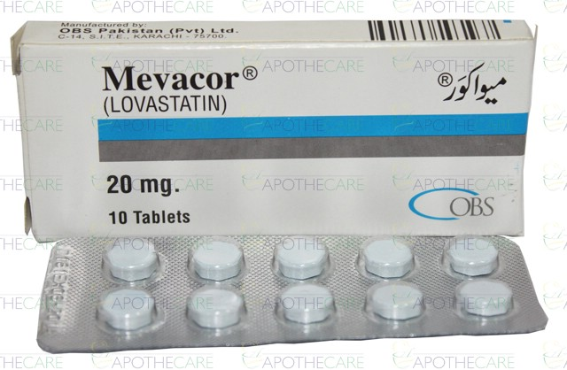
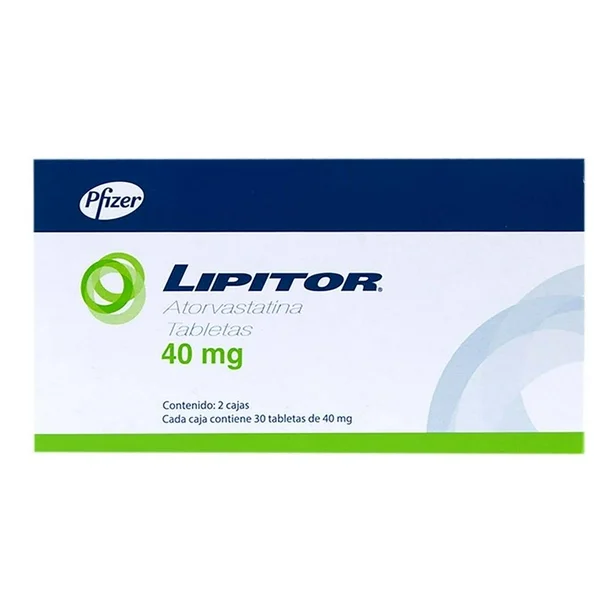
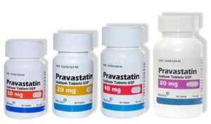
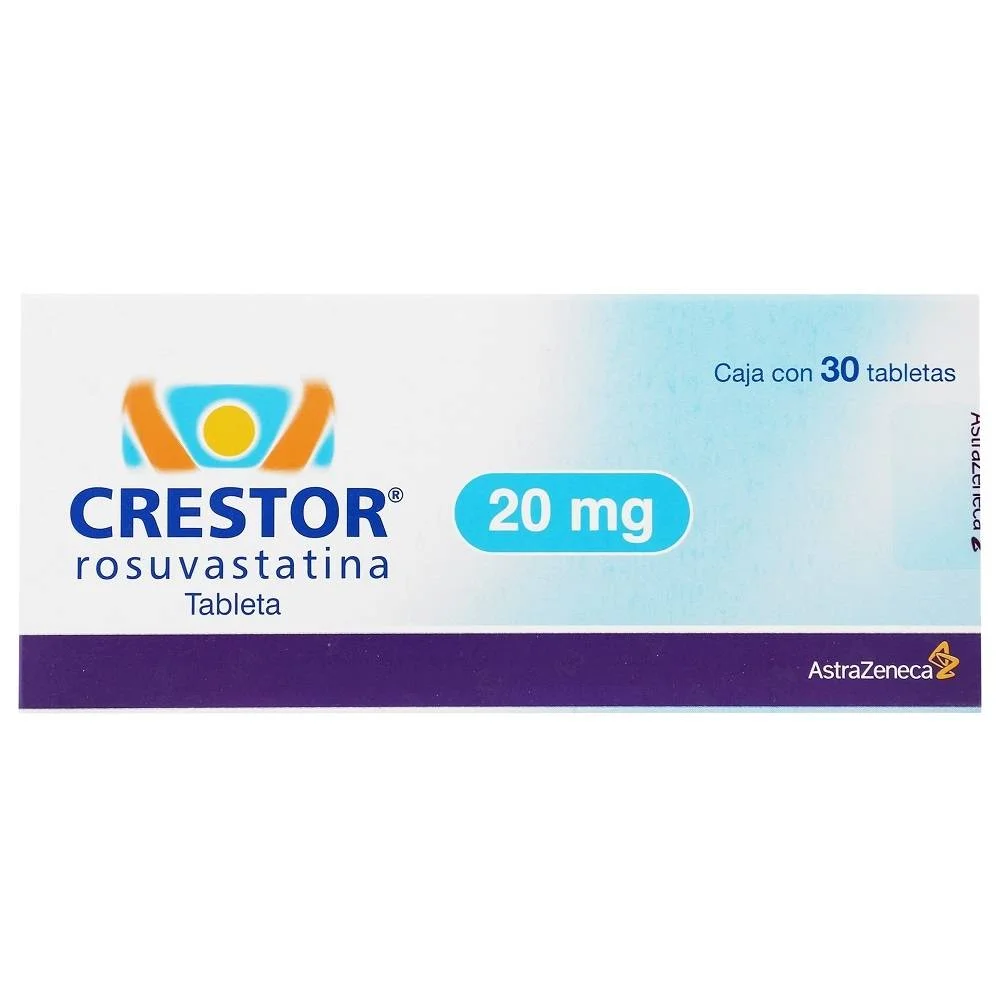
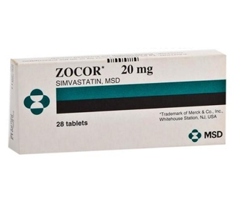
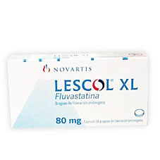

Las estatinas inhiben de forma competitiva la enzima HMG-CoA reductasa, que es clave en la síntesis de colesterol en el hígado.Esta enzima convierte el HMG-CoA en mevalonato, un paso temprano y esencial en la producción de colesterol. Al inhibir esta enzima:
El CYP3A4 es una enzima del sistema del citocromo P450, presente principalmente en hígado e intestino.
En cambio, estatinas como pravastatina, rosuvastatina y fluvastatina no dependen del CYP3A4, por lo que son más seguras en pacientes con múltiples medicamentos.
Las indicaciones aprobadas por la FDA (Food and Drug Administration) varían ligeramente entre cada estatina, pero generalmente están indicadas para el tratamiento y/o la prevención de la enfermedadcardiovascular aterosclerótica clínica (ASCVD) de prevención primaria y secundaria (p. ej., infarto de miocardio o accidente cerebrovascular).
Prevención primaria (edad 40 a 75 años): En pacientes sin enfermedad cardiovascular clínicamente significativa, las estatinas además de medidas de estilo de vida saludable para el corazón están indicadas en las siguientes condiciones para reducir el riesgo de desarrollar infarto de miocardio. LDL-C MAYOR DE 190 MG/DL: Iniciar tratamiento con Estatinas de alta intensidad con el objetivo de lograr Una reducción de más del 50 % en la concentración De LDL-C. Si LDL-C es mayor o igual a 100 mg/dl, Agregar ezetimiba +/- inhibidor de PCSK9
Colesterol total: <200 mg/dL
Se recomienda tomar estatinas de vida media corta (simvastatina, pravastatina, fluvastatina) antes de acostarse para aprovechar la síntesis nocturna de colesterol. Las estatinas de vida media larga (atorvastatina, rosuvastatina, pitavastatina) pueden tomarse por la mañana o noche, pero siempre a la misma hora. La lovastatina debe tomarse con las comidas, ya que su absorción mejora con alimentos.
Estatinas de baja intensidad: incluyen fluvastatina de 20 a 40 mg, lovastatina de 20 mg, pitavastatina de 1 mg, pravastatina de 10 a 20 mg o simvastatina de 10 mg. Las estatinas de baja intensidad reducen el colesterol LDL en menos del 30 %.
Estatinas de intensidad moderada: incluyen atorvastatina de 10 a 20 mg, fluvastatina de 80 mg, lovastatina de 40 mg, pitavastatina de 2 a 4 mg, pravastatina de 40 a 80 mg, rosuvastatina de 5 a 10 mg o simvastatina de 20 a 40 mg. Las estatinas de intensidad moderada reducen el colesterol LDL entre un 30 y un 50 %.
Estatinas de alta intensidad: incluyen atorvastatina de 40 a 80 mg o rosuvastatina de 20 a 40 mg. Las estatinas de alta intensidad reducen el colesterol LDL en más del 50 %.
Aunque son bien toleradas, pueden causar:
Comunes:
Menos comunes pero graves:
Otras:
Fármacos que aumentan el riesgo de miopatía / rabdomiólisis:
Todos estos inhiben el CYP3A4, enzima que metaboliza muchas estatinas → aumenta concentración plasmática → aumenta riesgo de toxicidad muscular.
Otros:
| Estatina | Marca comercial (México) | Presentación común |
|---|---|---|
| Lovastatina | Mevacor® | Tabletas 20 mg, 40 mg |
| Pravastatina | Pravachol® | Tabletas 10 mg, 20 mg, 40 mg |
| Simvastatina | Zocor® | Tabletas 10 mg, 20 mg, 40 mg |
| Atorvastatina | Lipitor® / Zarator® | Tabletas 10 mg, 20 mg, 40 mg, 80 mg |
| Rosuvastatina | Crestor® / Rovartal® | Tabletas 5 mg, 10 mg, 20 mg, 40 mg |
| Fluvastatina | Lescol® | Cápsulas 20 mg, 40 mg / Retard 80 mg |
| Pitavastatina | Livazo® | Tabletas 1 mg, 2 mg, 4 mg |